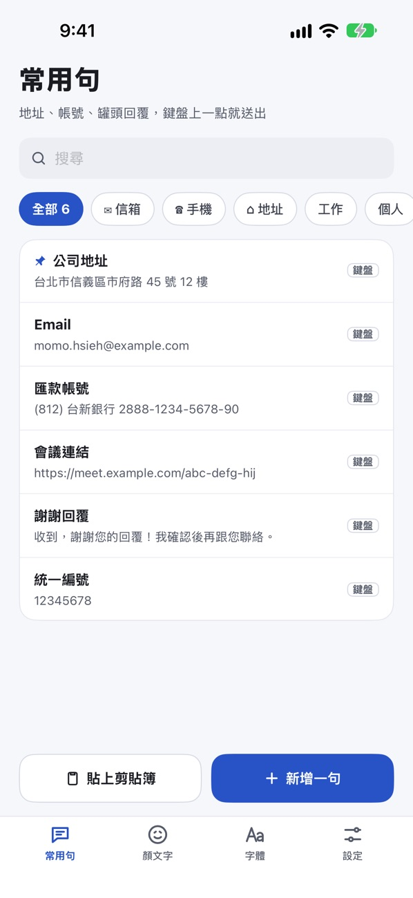
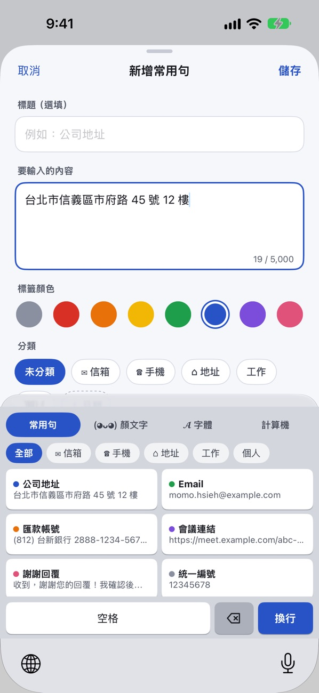
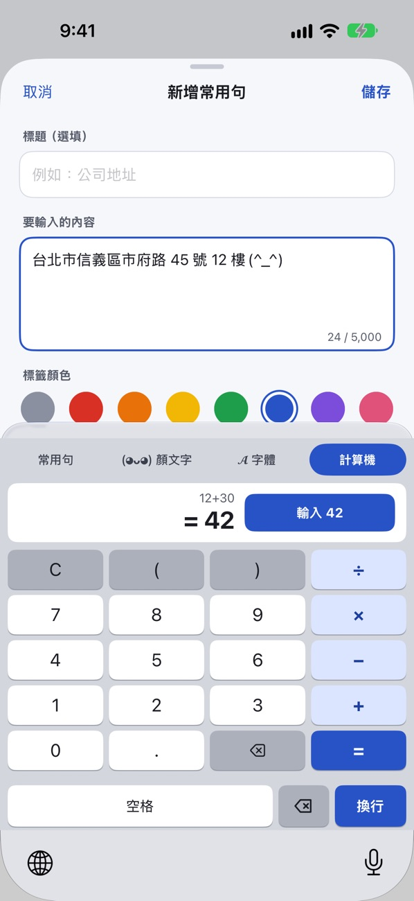

QuickKey: save a phrase once, insert it in any app
Still switching to Notes to copy and paste? Save your address, email, bank details and reply templates as cards, then tap one on the keyboard while typing in Messages, WhatsApp, Instagram or Mail. Kaomoji, fancy fonts and a calculator are built in too.
Free on the App StoreiPhone (iOS 17 or later) · No Android version



QuickKey at a glance
- Features
- Saved phrases, kaomoji, fancy fonts and a calculator in one keyboard
- Privacy
- The keyboard works offline and never records what you type; data stays on your iPhone
- Backup
- Backs up daily to your own iCloud, restore on a new iPhone
- Device
- iPhone, iOS 17 or later
- Price
- Free; Pro is a one-time purchase, not a subscription
How to use QuickKey
The first time you open it, the app walks you through adding the keyboard.
Save your phrases
Add cards in the app: work address, email, account numbers, replies you send often. Sort them into categories.
Add the keyboard
Follow the in-app steps to add QuickKey to your iPhone keyboards and turn on “Allow Full Access” so it can read your cards.
Tap to insert
In any text field, hold the globe key and choose QuickKey, then tap a card. Next time, just tap the globe key to switch back.
What's in the keyboard
Switch between them without leaving the app you're typing in.
- Saved phrasesText and image cards you save once, sorted by category, inserted with a tap.
- KaomojiFaces like (｡◕‿◕｡), searchable; Pro unlocks the full collection.
- Fancy fontsTurn text into the special fonts you see on Instagram, great for names and bios.
- CalculatorWork out a price or a total mid-message without leaving the app.
Price
Free to download; the free version limits how many phrases and fancy fonts you can use. Pro is a one-time purchase, not a subscription: unlimited phrases, plus every kaomoji, font and custom categories. Switching phones? Tap “Restore” in the app to get Pro back.
Frequently asked questions
Does QuickKey record what I type?
No. The keyboard works offline and never records or uploads what you type. Your phrases stay on your iPhone and in your own iCloud backup.
Why does it need “Allow Full Access”?
The keyboard needs Full Access to read the phrases you saved in the app and show what you recently copied. Kaomoji, fonts and the calculator work without it.
Does it work in WhatsApp, Instagram and Messages?
Yes. You can switch to QuickKey anywhere you can type; iOS switches back to the system keyboard in password fields.
Will I lose my phrases on a new iPhone?
No. The app backs up daily to your own iCloud; sign in with the same Apple Account on the new phone to restore.
Is QuickKey a subscription?
No. It is free to download, and Pro is a one-time purchase you keep.
Is there an Android version?
Not at the moment. QuickKey is iPhone only (iOS 17 or later).